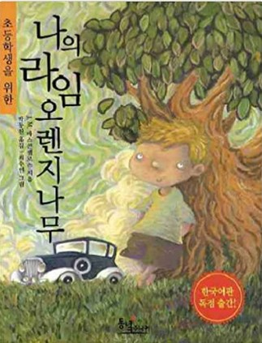

Originally, I was going to do a YouTube channel that I enjoy, but there were too many, so I chose the theme as a book.
This book is called 'My Lime Orange Tree'.
This novel was published by the Brazilian novelist José Mauro de Vasconcelos (1920-1984).
The protagonist, Jeze, a 5-year-old child living in Brazil, is the main character and draws various stories. Jeze, who lives in poverty with an unemployed father, a mother who works in a factory, three older sisters, an older brother, and a younger brother, suffers from bad things in her family. In fact, the treatment that Jeze receives in the film is child abuse. Jeze is also a villain, but the violence it inflicts is almost quasi-murderous. Jeze was mainly abused by his father, and whenever Zeze was abused, his older sister stopped his father, which, if I remember correctly, also caused violence to Jeze's older sister. He also had someone to depend on. Of course, there is his older sister, but there was a person called 'Portuga'. He is the only adult Jeze trusts and relies on. Portuga gave Jeze a good experience, giving him a car ride and getting around.
I read this book when I was 10 or 11 years old. It's been about 11 years, but the reason I still remember it is because it was the first time I read a depressing book in my life. To be honest, I didn't read many books when I was young. I first came across this book because I had to read it for an assignment in elementary school. At first, of course, I thought it was about a dream or the future, so I started reading it without much interest, but I started to get shocked from the middle part. And it was difficult to read the book after seeing the details of Portuga's death described above. When I read the book, I was even young, and I was even more shocked because the contents of the book were so heavy. If my memory is correct, this book is not a happy ending. That's why I read this book once and haven't been able to read it again after that. It was shocking for some reason, but I didn't have much opportunity to concentrate on reading the book. To be honest, I loved watching movies at the time, so even when I went to the cinema with my father, I always watched two movies and headed home. Anyway, I read 'My Lime Orange Tree' because I didn't want it, but it's a good book that I can remember even after 10 years, and I still have it.
Picture from Amazon
This book has been translated into Korean. The English version is titled "My Sweet Orange Tree", but the author is the same and the content is the same.
For a more detailed summary, you can watch this video. This is a YouTube video that explains it well with pictures.
From 'https://www.youtube.com/watch?v=mk8Y98p9Jjs'